, , work_in_IL = In Illinois
YEAR
did_wfh_labels 2019 2021
Did not WFH 5632943 4604673
Did WFH 318174 1140835
, , work_in_IL = Out of IL
YEAR
did_wfh_labels 2019 2021
Did not WFH 217696 184265
Did WFH 0 0
318174/ (318174+5632943) # percent of remote workers that worked outside of IL but lived in IL in 2019
[1] 0.05346458
1140835/(1140835+4604673) # 2021 percent of WFH workers that worked outside of IL
, , work_in_IL = In Illinois
YEAR
has_incearn_labels 2019 2021
Has EarnInc 5951117 5745508
, , work_in_IL = Out of IL
YEAR
has_incearn_labels 2019 2021
Has EarnInc 217696 184265
For the counties that can be identified in the data (populations > 100,000 & < 200,000. 1-Year ACS have minimum of 65,000 population), the census summary tables are close but not identical to the tables calculated with the ACS sample data. “In this way more densely populated areas, like Chicago and Cook County will contain many PUMAs within their boundaries, while multiple sparsely populated entire counties, e.g., Jackson, Perry, Franklin, and Williamson, will comprise one PUMA.” - IPUMS v other Geographies
obs_perPUMA<- joined %>%group_by(PUMA, YEAR) %>% dplyr::summarize(weightedcount=sum(PERWT), #weighted unweightedcount =n()) %>%arrange(unweightedcount)### Minimimum observations are 271 in PUMA area 03528obs_perPUMA
figure5b <- mapPUMAboth %>%as_tibble() %>%group_by(YEAR, PUMA) %>%mutate(Prop =round(n/sum(n), digits =3)) %>%filter(did_wfh_labels =="Did WFH") %>%pivot_wider(id_cols =-c(n), names_from ="YEAR", values_from ="Prop") %>%mutate(pct_change=`2021`-`2019`) %>%full_join(pumasIL, by =c("PUMA"="PUMACE10")) %>%ggplot(aes(fill = pct_change)) +geom_sf(aes(geometry = geometry), color ="black")+labs(title ="Change in Population that Did Work from Home", subtitle ="2019 vs 2021", caption ="The did_WFH variable based on TRANWORK==80 from ACS 2019 & 2021 1-Year Survey individual level data. Each geographic region has between 100K and 200K people. ") +theme_classic() +theme(axis.ticks =element_blank(), axis.text =element_blank())+scale_fill_steps2(#colors = c("white", "darkblue"), high ="darkblue", low ="black", limits =c(0,.6),n.breaks =4,show.limits=TRUE,nice.breaks=FALSE,name ="% change in WFH", label = scales::percent)closeupFIPs<-c("097", "111", "089","043", "197", "031"#,"093"# ,"007" )mapPUMAboth <-svytable(~YEAR+countyFIP+PUMA+ did_wfh_labels, design = dstrata)mapPUMAboth <- mapPUMAboth %>%as_tibble() %>%filter(countyFIP %in% closeupFIPs) %>%group_by(YEAR, PUMA) %>%mutate(Prop =round(n/sum(n), digits =3)) %>%filter(did_wfh_labels =="Did WFH"& n !="0") %>%inner_join(pumasIL, by =c("PUMA"="PUMACE10"))#mapPUMAboth %>% select(YEAR, countyFIP, PUMA, Prop, n, NAME10)countyborders<- countyIL %>%filter(COUNTYFP %in% closeupFIPs)#countybordersfigure5c <-ggplot(mapPUMAboth, aes(fill = Prop)) +geom_sf(aes(geometry = geometry), color ="black")+# labs(title = "Where Did People Work from Home?: Close up View", # subtitle = "Percent of PUMA population in 2019 & 2021 that did WFH") +theme_classic() +theme(axis.ticks =element_blank(), axis.text =element_blank())+scale_fill_binned(#colors = c("white", "darkblue"), high ="darkblue", low ="white", limits =c(0,.6),n.breaks =4,show.limits=TRUE,nice.breaks=FALSE,name ="% that did WFH",label = scales::percent)+facet_wrap(~YEAR) figure5c <- figure5c +geom_sf(data = countyborders, fill=NA, color="black", lwd =1) +theme_classic()+theme(axis.ticks =element_blank(), axis.text =element_blank())+facet_wrap(~YEAR)# as a dot graph ## mapPUMAboth <-svytable(~YEAR+PUMA+did_wfh_labels, design = dstrata)mapPUMAboth <- mapPUMAboth %>%as_tibble() %>%group_by(YEAR, PUMA) %>%mutate(Prop =round(n/sum(n), digits =3)) %>%filter(did_wfh_labels =="Did WFH") %>%full_join(pumasIL, by =c("PUMA"="PUMACE10"))order <- mapPUMAboth %>%as_tibble() %>%filter(YEAR ==2021& did_wfh_labels =="Did WFH") %>%filter(Prop >0.25| Prop <0.1) %>%select(NAME10, Prop_2021 = Prop)mapPUMAboth <-inner_join(mapPUMAboth, order) %>%filter()mapPUMAboth %>%ungroup() %>%filter(#did_wfh_labels == "Did WFH" #& NAME10 != "NA" & YEAR != "NA" )%>%# filter(YEAR == 2021 & (Prop > 0.25 | Prop < 0.1) ) %>%select(NAME10, PUMA, Prop) %>%distinct() %>%arrange(desc(Prop)) %>%head()
NAME10
PUMA
Prop
Chicago City (North)--Lake View & Lincoln Park
03502
0.519
Chicago City (Central)--Near North Side, Loop & Near South Side
03525
0.447
Chicago City (West)--West Town, Near West Side & Lower West Side
03524
0.439
Chicago City (North)--Edgewater, Uptown & Rogers Park
03501
0.367
Lake County--Vernon, Moraine, West Deerfield & Libertyville (Southeast) Townships
03310
0.366
Chicago City (Northwest)--Logan Square, Avondale & Hermosa
03522
0.363
Code
figure5d <- mapPUMAboth %>%filter(did_wfh_labels =="Did WFH"#& NAME10 != "NA" & YEAR != "NA" )%>%filter(Prop >0.25| Prop <0.1) %>%ggplot(aes(x = Prop*100, y=reorder(PUMA, Prop_2021*100)))+geom_line(aes(group = PUMA))+theme_classic()+geom_point(aes(color=YEAR), size =3) +scale_color_brewer(palette="Paired", labels =c("% WFH in 2019", "% WFH in 2021"), direction =1)+labs(title ="Change in PUMA Labor Force that did WFH",subtitle ="Percent of Labor Force within PUMA that Did Work from Home", # caption = "Graph includes PUMAs with Proportions of WFH Workers greater # than 25% or less than 10%. Filtered PUMAs to increase legibility. # DuPage had around 8% of the labor force working from home in 2019 and # around 27% of its labor force working from home in 2021. # There was ~20 percentage point increase between 2019 and 2021 for DuPage County. # Working from home is based on TRANWORK variable from ACS 1-year surveys.", x ="Percentage Points", y ="")mapPUMAboth <-svytable(~YEAR+PUMA+countyFIP+did_wfh_labels, design = dstrata)figure5e <- mapPUMAboth %>%as_tibble() %>%filter(countyFIP %in% closeupFIPs) %>%group_by(YEAR, PUMA) %>%mutate(Prop =round(n/sum(n), digits =3)) %>%filter(did_wfh_labels =="Did WFH"& n !="0") %>%pivot_wider(id_cols =-c(n), names_from ="YEAR", values_from ="Prop") %>%mutate(pct_change=`2021`-`2019`) %>%inner_join(pumasIL, by =c("PUMA"="PUMACE10")) %>%ggplot(aes(fill = pct_change)) +geom_sf(aes(geometry = geometry), color ="black")+labs(title ="Change in Population that Did Work from Home", subtitle ="2019 vs 2021") +theme_classic() +theme(axis.ticks =element_blank(), axis.text =element_blank()) +scale_fill_steps2( high ="darkblue", low ="black", limits =c(0,.6),n.breaks =4,show.limits=TRUE,nice.breaks=FALSE,name =" Pct Pt change that did WFH",label = scales::percent)
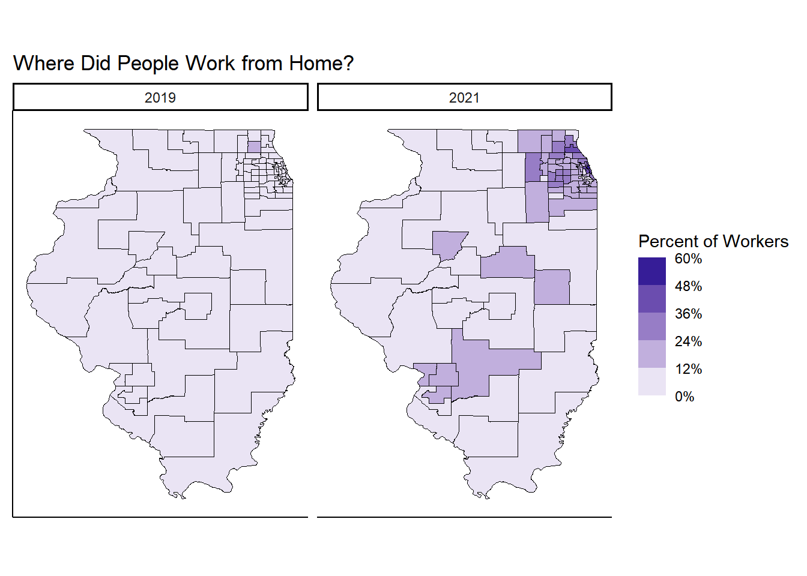
The did_WFH variable is based on TRANWORK==80 from ACS 2019 & 2021 1-Year Survey individual level data. Each geographic region has between 100K and 200K people.
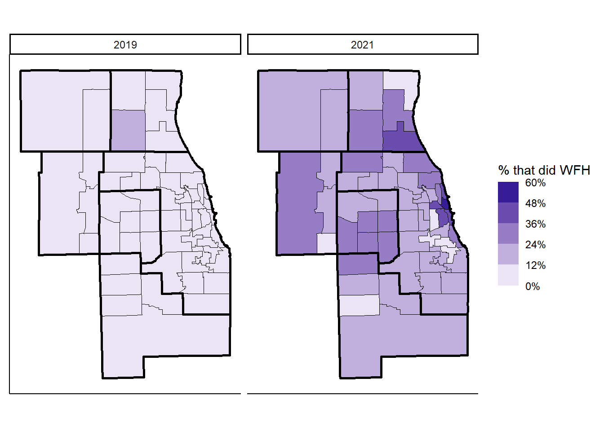
Zoom in on Cook and Surrounding Counties
Percent of Workers who Did Work From Home: 2019 & 2021
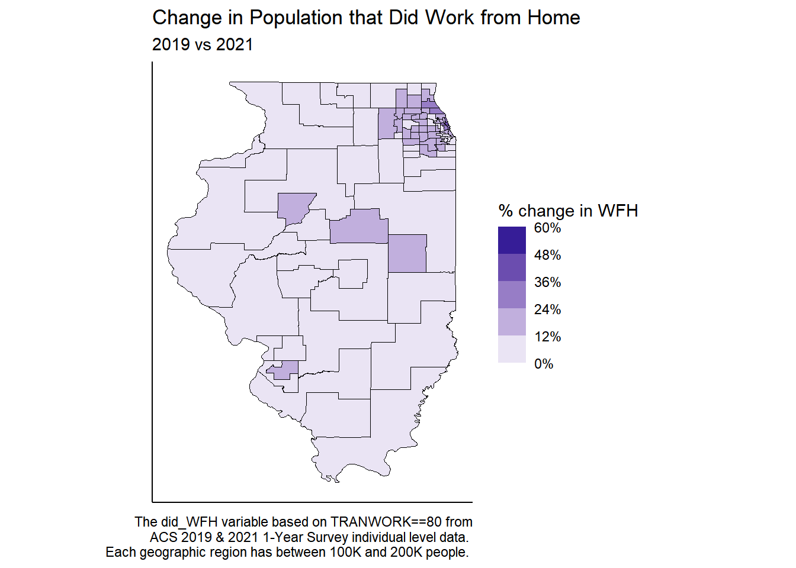
Graph includes PUMAs with Proportions of WFH Workers greater than 25% or less than 10%. Filtered PUMAs to increase legibility. DuPage had around 8% of the labor force working from home in 2019 and around 27% of its labor force working from home in 2021. There was ~20 percentage point increase between 2019 and 2021 for DuPage County. Working from home is based on TRANWORK variable from ACS 1-year surveys.
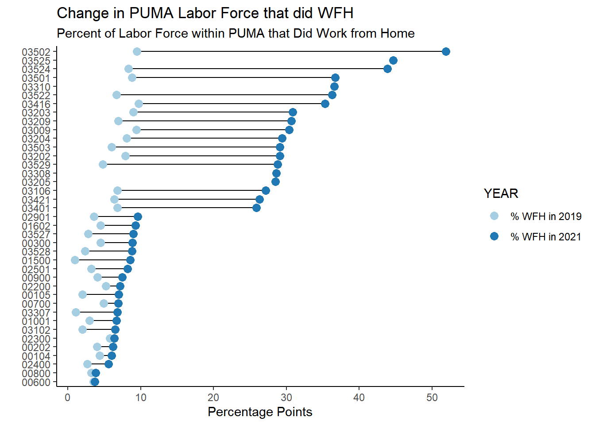
A dot plot of change
Change from 2019 to 2021 in who did WFH
2.1.1 WFH Feasibility
We compute these shares using our O*NET-derived classification of occupations that can be done at home and the occupational composition using ACS responses in each PUMA by 6-digit SOC in the BLS’s 2018 Occupational Employment Statistics.
mapPUMAboth <-svytable(~YEAR+PUMA+CanWorkFromHome, design = dstrata)mapPUMAboth <- mapPUMAboth %>%as_tibble() %>%group_by(YEAR, PUMA) %>%mutate(Prop =round(n/sum(n), digits =3)) %>%filter(CanWorkFromHome =="Can WFH") %>%full_join(pumasIL, by =c("PUMA"="PUMACE10"))mapPUMAboth %>%ggplot(aes(fill = Prop)) +geom_sf(aes(geometry=geometry), color ="black")+labs(title ="Percent of PUMA area population that COULD work from home", subtitle =" based on occupation characteristics: 2019 vs 2021", caption ="Teleworkability based on D&N 2020 methodology. OCCSOC codes from ACS 1 year Survey data at individual level.") +theme_classic() +theme(axis.ticks =element_blank(), axis.text =element_blank())+scale_fill_steps2(#colors = c("white", "darkblue"), high ="darkblue", low ="black", limits =c(0,.6),n.breaks =4,show.limits=TRUE,nice.breaks=FALSE,name ="% Potentially Could WFH", label = scales::percent) +facet_wrap(~YEAR)Figure2b <- mapPUMAboth %>%filter(YEAR ==2021)%>%ggplot(aes(fill = Prop)) +geom_sf(aes(geometry = geometry), color ="black")+# labs(title = "Work from Home Feasibility Rate", # subtitle = " Based on Occupation Characteristics", # caption = "Teleworkability based on D&N 2020 methodology. # OCCSOC codes from ACS 1 year Survey data at individual level.") +theme_void() +theme(axis.ticks =element_blank(), axis.text =element_blank(), plot.title =element_text(hjust =0.5), plot.caption =element_text(hjust=.5), plot.subtitle =element_text(hjust =0.5)) +scale_fill_steps2(#colors = c("white", "darkblue"), high ="darkblue", low ="black", limits =c(0,.6),n.breaks =4,show.limits=TRUE,nice.breaks=FALSE,name ="Labor force with\nWFH Feasibility", label = scales::percent)Figure2b#ggsave(Figure2b, "Figure2bV2.png", width=3, height=3, units = "in")
2.1.2 Internet Access
Code
## CINETHH is for access to internet # (either at home, somewhere else, or no access)# from joined dataframe. Not using survey objects or survey packagemapPUMAboth <- joined %>%group_by(YEAR, PUMA, CINETHH) %>% dplyr::summarize(weightedcount=sum(PERWT), #weighted unweightedcount =n()) %>%mutate(pct_weight = weightedcount/sum(weightedcount), pct_noweight = unweightedcount/sum(unweightedcount))%>%full_join(pumasIL, by =c("PUMA"="PUMACE10")) mapPUMAboth## identical to graph below made using svytable()# mapPUMAboth %>%# filter(CINETHH ==3) %>% # ggplot(aes(fill = pct_weight)) +# geom_sf(aes(geometry = geometry), color = "black")+ # scale_fill_continuous(low = "gray", high = "red", name = "% of Population", label = scales::percent)+# theme_minimal()+# theme(legend.title = element_blank(), axis.text.x = element_blank(), axis.text.y = element_blank(), panel.grid.major = element_blank(), panel.grid.minor = element_blank(), legend.position="right")+# labs(title = "Percent of population that did NOT have access to Internet", # subtitle = "Geography = PUMAs", # ) + theme(legend.title = element_blank())+# scale_fill_gradientn(colors = c("white", "red4"), # # limits = c(-.1,.1),# n = 7,# name = "Change in Access", label = scales::percent)+# facet_wrap(~YEAR)
HHdesign <- survey::svydesign(id =~CLUSTER, strata =~STRATA, weights =~HHWT, data = joined)## Access internet using survey objectsmapPUMAboth <-svytable(~YEAR+PUMA+CINETHH, design = HHdesign)mapPUMAboth <- mapPUMAboth %>%as_tibble() %>%group_by(YEAR, PUMA) %>%mutate(Prop =round(n/sum(n), digits =3)) %>%full_join(pumasIL, by =c("PUMA"="PUMACE10"))mapPUMAboth %>%filter(CINETHH ==3 ) %>%ggplot(aes(fill = Prop)) +geom_sf(aes(geometry = geometry), color ="black")+scale_fill_binned(low ="white", high ="red4", name ="% of Population", label = scales::percent,n.breaks=4,nice.breaks=FALSE,show.limits=TRUE)+labs(title ="Percent of population that lacked access to Internet", caption ="Geography = PUMAs. Includes all dstrata responses for CINETHH. Does not subset for people who answered the commuting or occsoc questions.") +facet_wrap(~YEAR) +theme_minimal()+theme(legend.title =element_blank(), axis.text.x =element_blank(), axis.text.y =element_blank(), panel.grid.major =element_blank(), panel.grid.minor =element_blank(), legend.position="right")
# mapPUMAboth %>% # select(YEAR,Prop,CINETHH,geometry) %>%# filter(CINETHH ==3) %>% # pivot_wider( names_from ="YEAR", values_from = "Prop") %>%# mutate(pct_change = `2021`-`2019`) %>%# ggplot(aes(fill = pct_change)) +# geom_sf(aes(geometry = geometry), color = "black")+ # theme_minimal()+# theme(legend.title = element_blank(), axis.text.x = element_blank(), axis.text.y = element_blank(), panel.grid.major = element_blank(), panel.grid.minor = element_blank(), legend.position="right")+# scale_fill_gradientn(colors = c("green4", "white", "red4"), # limits = c(-.15,.15),# n = 7,# name = "Change in Access", label = scales::percent)+# labs(title = "Decrease in Lack of Internet Access", # subtitle = "Needs to be flipped so not double negative",# caption = "Rural areas were more likely to increase their access to internet at home. # Change in Percentage points = 2021 % - 2019 %.# Access to internet at home or another location is considered having Access to internet")mapPUMAboth %>%filter(CINETHH ==1) %>%pivot_wider(id_cols =-c(n), names_from ="YEAR", values_from ="Prop") %>%mutate(pct_change =`2021`-`2019`) %>%ggplot(aes(fill = pct_change)) +geom_sf(aes(geometry = geometry), color ="black")+theme_minimal()+theme(legend.title =element_blank(), axis.text.x =element_blank(), axis.text.y =element_blank(), panel.grid.major =element_blank(), panel.grid.minor =element_blank(), legend.position="right")+scale_fill_steps2(low="red4", mid="white", high="forestgreen", # limits = c(-.15,.15),n.breaks=4,show.limits=TRUE,nice.breaks=FALSE,name ="Chance in Access", label = scales::percent)+labs(title ="Change in Labor Force with Internet at home",subtitle ="2019 to 2021")
2.1.2.0.1 High Speed Internet
High speed internet is not the best measurement of due to them including DSL in their definition of “high speed.”
FCC standards say minimum 25Mbps for download and 3Mbps for upload. “traditionally, the way to determine if a connection is high speed is to test its ability to connect multiple devices that allow streaming and access to modern applications at the same time.
High speed internet allows teleworkers the ability to live and work in locations of their choosing without commuting to work. Also important for education, especially during COVID and online classes. Many families did not have the bandwidth necessary to support someone working from home and having children in online classes at the same time (let alone multiple children in online classes).
The Infrastructure Investment and Jobs Act (IIJA) defines “underserved” broadband as an Internet speed < 100 Mbps downstream and 20Mbps upstream.
Zoom needs between 2 and 3 Mbps for group video calls that look good.
1.0 Mbps to 1.5 Mbps for lower quality video calls that should still work.
For areas that had a decrease in access to high speed internet: Is it possible that they realized that their internet sucked when multiple people tried to use it? Most people didn’t know internet speeds before the pandemic. They thought they had high speed internet precovid and then when multiple people were at home, they realized they didn’t have enough bandwith for their internet demand?
Code
### Access to Hi speed internet #### from joined dataframe. Not using survey objects or survey packagemapPUMAboth <- joined %>%group_by(county_pop_type, YEAR, PUMA, CIHISPEED) %>% dplyr::summarize(weightedcount=sum(PERWT), #weighted unweightedcount =n()) %>%mutate(pct_weight = weightedcount/sum(weightedcount), pct_noweight = unweightedcount/sum(unweightedcount))%>%full_join(pumasIL, by =c("PUMA"="PUMACE10")) mapPUMAboth
## Access to Hi speed internet using survey objectsmapPUMAboth <-svytable(~YEAR+PUMA+CIHISPEED, design = HHdesign)mapPUMAboth <- mapPUMAboth %>%as_tibble() %>%group_by(YEAR, PUMA) %>%mutate(Prop =round(n/sum(n), digits =3)) %>%full_join(pumasIL, by =c("PUMA"="PUMACE10"))mapPUMAboth %>%filter(CIHISPEED ==10) %>%ggplot(aes(fill = Prop)) +geom_sf(aes(geometry = geometry), color ="black")+labs(title ="Percent of population WITH High Speed Internet", subtitle ="", caption ="Each PUMA has >100K & < 200K people.") +facet_wrap(~YEAR)+scale_fill_binned(low ="white", high ="forestgreen", n.breaks =4,show.limits =TRUE,# nice.breaks =FALSE,name ="Population %", label = scales::percent)+Alea_theme()mapPUMAboth %>%pivot_wider(id_cols =-c(n), names_from ="YEAR", values_from ="Prop") %>%mutate(pct_change =`2021`-`2019`) %>%ggplot(aes(fill = pct_change)) +geom_sf(aes(geometry = geometry), color ="black")+labs(title ="Change in Access to High Speed Internet",subcaption ="2019 to 2021",caption ="Percentage point change: 2021 PUMA% with CIHISPEED=10 - 2019 PUMA% for ACS variable CIHISPEED=10.") +scale_fill_steps2(high ="forestgreen", mid ="white", low ="red4", n.breaks=4,nice.breaks =FALSE,show.limits =TRUE,name ="Change in Access", label = scales::percent) +Alea_theme()
Figure 2.1: ?(caption)
Figure 2.2: ?(caption)
2.2 County Level
19 is Champaign, 31 is Cook, 37 is DeKalb, 43 is DuPage, 89 is Kane, 111 is McHenry, etc.
2.2.0.1 Internet Access
## Access internet using survey objectsmapPUMAboth <-svytable(~CINETHH+YEAR+countyFIP, design = HHdesign)mapPUMAboth <- mapPUMAboth %>%as_tibble() %>%group_by(YEAR, countyFIP) %>%mutate(Prop =round(n/sum(n), digits =3)) %>%# filter(CINETHH == 3 ) %>% full_join(countyIL, by =c("countyFIP"="COUNTYFP"))mapPUMAboth %>%filter(CINETHH ==3 ) %>%filter(YEAR !="NA") %>%ggplot(aes(fill = Prop)) +geom_sf(aes(geometry = geometry), color ="black")+labs(title ="Percent of population that lacked access to Internet", caption ="Geography = Counties with populations > ~60K") +facet_wrap(~YEAR) +theme(legend.title =element_blank())+scale_fill_steps2( low ="white", high ="red4", n.breaks=4,nice.breaks =FALSE,show.limits =TRUE,"Population %", label = scales::percent) +Alea_theme()### Change in LACK OF ACCESSmapPUMAboth %>%pivot_wider(id_cols =-c(n), names_from ="YEAR", values_from ="Prop") %>%mutate(pct_change =`2021`-`2019`) %>%ggplot(aes(fill = pct_change)) +geom_sf(aes(geometry = geometry), color ="black")+labs(title ="Change in access to Internet",caption ="Change in Percentage points = 2021 % lacking access - 2019 % lacking access. Uses CINETHH == 3 for not having internet access. A decrease is a good thing!" ) +scale_fill_steps2(low ="forestgreen", mid ="white", high ="red4", n.breaks=5,# nice.breaks = FALSE,show.limits =TRUE,name ="Change in Access", label = scales::percent) +Alea_theme()
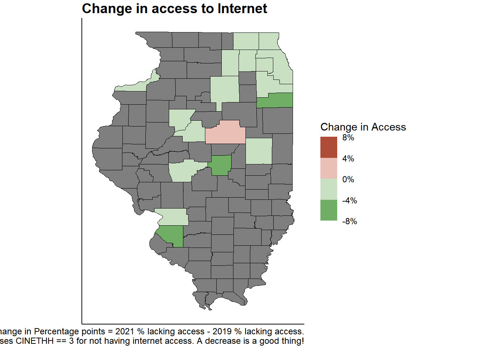
Code
### Access to Hi speed internet #### from joined dataframe. Not using survey objects or survey package# mapPUMAboth <- joined %>% # group_by(YEAR, countyFIP, CINETHH) %>% # dplyr::summarize(weightedcount=sum(PERWT), #weighted # unweightedcount = n()) %>% # mutate(pct_weight = weightedcount/sum(weightedcount), # pct_noweight = unweightedcount/sum(unweightedcount))%>% # filter(CINETHH ==3) %>% # full_join(countyIL, by = c("countyFIP" = "COUNTYFP")) # mapPUMAboth# # mapPUMAboth %>%# ggplot(aes(fill = pct_weight)) +# geom_sf(aes(geometry = geometry), color = "black")+ # labs(title = "Percent of population that did NOT have access to Internet", # subtitle = "Geography = County", # ) + # Alea_theme() +theme(legend.title = element_blank())+# scale_fill_gradientn(colors = c( "white", "red4"), # n = 5,# name = "Population %", label = scales::percent)+facet_wrap(~YEAR)## Access to High speed internet using survey objectsmapPUMAboth <-svytable(~YEAR+countyFIP+CIHISPEED, design = HHdesign)mapPUMAboth <- mapPUMAboth %>%as_tibble() %>%group_by(YEAR, countyFIP) %>%mutate(Prop =round(n/sum(n), digits =3)) %>%filter(CIHISPEED !=20 ) %>%full_join(countyIL, by =c("countyFIP"="COUNTYFP")) mapPUMAboth %>%filter(CIHISPEED ==10) %>%ggplot(aes(fill = Prop)) +geom_sf(aes(geometry = geometry), color ="black")+labs(title ="Percent of population with High-speed Internet" ) +facet_wrap(~YEAR)+scale_fill_binned(low ="white", high ="green4", na.value =NA,n.breaks =4,show.limits=TRUE,nice.breaks =FALSE,name ="Percent of Population", label = scales::percent)+Alea_theme()mapPUMAboth %>%pivot_wider(id_cols =-c(n), names_from ="YEAR", values_from ="Prop") %>%mutate(pct_change =`2021`-`2019`) %>%ggplot(aes(fill = pct_change)) +geom_sf(aes(geometry = geometry), color ="black") +theme_void()+scale_fill_steps2(low ="red4", mid="white", high ="forestgreen", n.breaks =7,na.value="gray",# nice.breaks=FALSE,show.limits =TRUE,# limits = c(-.2,.2),name ="Percent of Population", label = scales::percent)#+labs(title = "Change in access to High Speed Internet")ggsave("Figure7bV2.png", limitsize =FALSE, width =5, height =4, units ="in")#ggsave("Figure7b.eps", limitsize = FALSE,width = 8, height = 4, units = "in")#ggsave("Figure7b.pdf", limitsize = FALSE,width = 8, height = 4, units = "in")
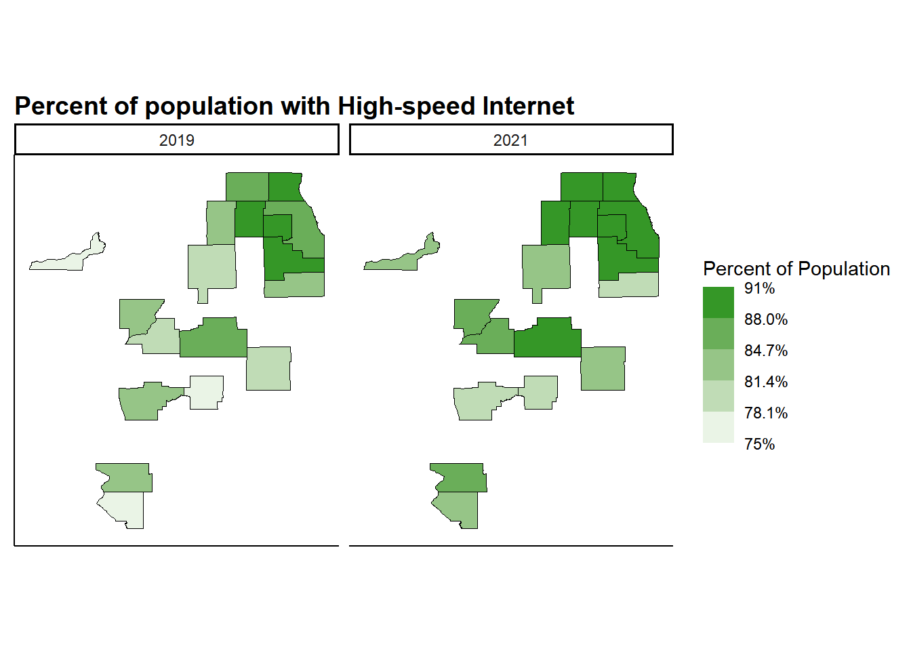
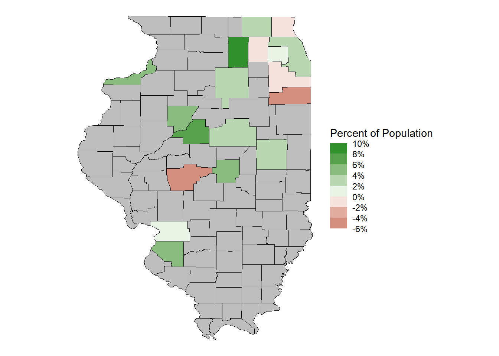
Code
# as a bar graph ## mapPUMAboth %>%filter(YEAR==2021) %>%ggplot(aes(group = countyFIP)) +geom_bar(aes(y = Prop, x=reorder(NAME, Prop)), stat ="identity") +#Alea_theme() + labs(title ="Proportion with High Speed Internet", subtitle ="In 2021", x ="", y ="" )+coord_flip()# as a dot graph ## order <- mapPUMAboth %>%as_tibble() %>%filter(YEAR ==2019& NAME !="NA"& CIHISPEED =="10") %>%select(NAME, Prop_2019= Prop)mapPUMAboth <-left_join(mapPUMAboth, order)mapPUMAboth %>%filter(NAME !="NA"& YEAR !="NA")%>%ggplot(aes(x = Prop, y=reorder(NAME, Prop_2019)))+geom_line(aes(group = NAME))+geom_point(aes(color=YEAR), size =3) +theme_minimal() +theme(legend.position ="none", legend.title =element_blank(),plot.title.position ="plot",# panel.background = element_rect(fill='transparent'), #transparent panel bgplot.background =element_rect(fill='transparent', color=NA) #transparent plot bg )+scale_color_brewer(palette="Paired", labels =c("2019", "2021"), direction =1)+labs(title ="Change in Access to High-speed Internet", x ="", y ="" ) +scale_x_continuous(label = scales::percent)ggsave("Figure7v2.png", limitsize =FALSE, width =5, height =4, units ="in")#ggsave("Figure7.eps", limitsize = FALSE,width = 8, height = 4, units = "in")#ggsave("Figure7.pdf", limitsize = FALSE,width = 8, height = 4, units = "in")
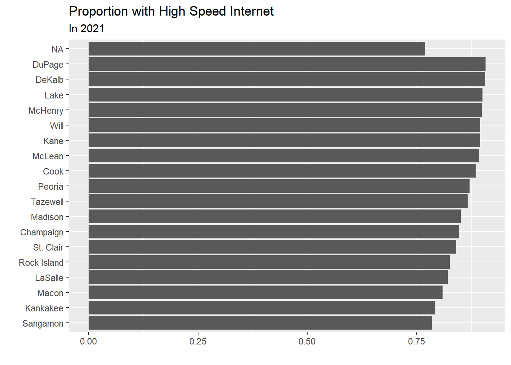
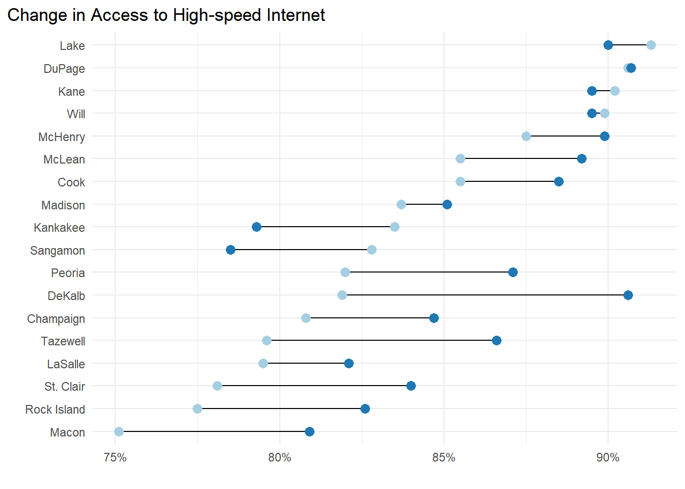
2.2.0.2 Did work from home
Code
mapPUMAboth <-svytable(~did_wfh_labels+YEAR+countyFIP, design = dstrata)mapPUMAboth <- mapPUMAboth %>%as_tibble() %>%group_by(YEAR, countyFIP) %>%mutate(Prop =round(n/sum(n), digits =3)) %>%full_join(countyIL, by =c("countyFIP"="COUNTYFP"))mapPUMAboth %>%filter(did_wfh_labels =="Did WFH") %>%ggplot(aes(fill = Prop)) +geom_sf(aes(geometry = geometry), color ="black")+labs(title ="Percent of Labor Force that Worked from Home", caption ="Geography = Counties with populations > ~60K") +facet_wrap(~YEAR) +scale_fill_binned(low="white", high ="darkblue", na.value ="gray",show.limits=TRUE,n.breaks =4,name ="Population %", label = scales::percent) +Alea_theme()mapPUMAboth %>%pivot_wider(id_cols =-c(n), names_from ="YEAR", values_from ="Prop") %>%mutate(pct_change =`2021`-`2019`) %>%ggplot(aes(fill = pct_change)) +geom_sf(aes(geometry = geometry), color ="black")+Alea_theme()+scale_fill_binned(low="white", high ="darkblue", na.value ="gray",show.limits=TRUE,nice.breaks=FALSE,n.breaks =4,limits =c(0,.20),name ="Percentage Point\nIncrease", label = scales::percent)#+# labs(title = "Percentage Point Change in Labor Force that Did WFH")ggsave("Figure4bV2.eps", limitsize =FALSE, width =8, height =5, units ="in")ggsave("Figure4bV2.pdf", limitsize =FALSE,width =8, height =5, units ="in")ggsave("Figure4bV2.png", limitsize =FALSE, width =8, height =5, units ="in")
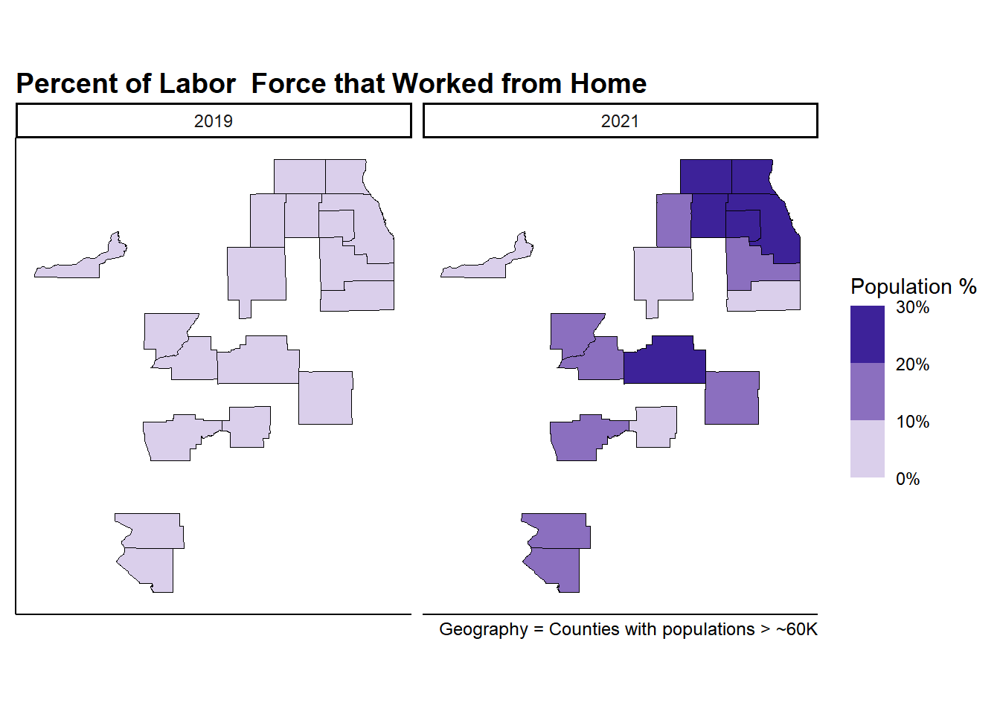
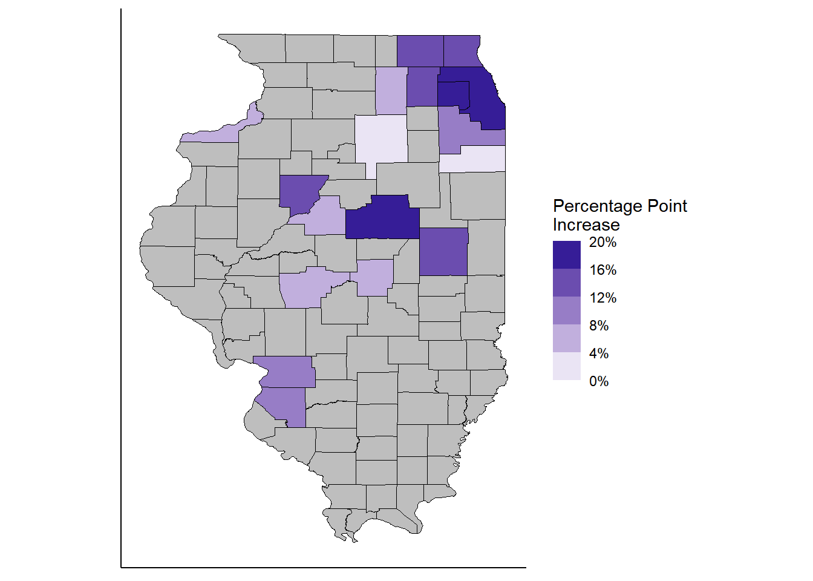
Code
# as a dot graph ## order <- mapPUMAboth %>%as_tibble() %>%filter(YEAR ==2021& did_wfh_labels =="Did WFH") %>%select(countyFIP, Prop_2021 = Prop)mapPUMAboth <-left_join(mapPUMAboth, order)mapPUMAboth %>%filter(did_wfh_labels =="Did WFH"& NAME !="NA"& YEAR !="NA")%>%ggplot(aes(x = Prop*100, y=reorder(NAME, Prop_2021*100)))+geom_line(aes(group = NAME))+theme_classic()+geom_point(aes(color=YEAR), size =3) +scale_color_brewer(palette="Paired",# labels = c("% WFH in 2019", "% WFH in 2021"), direction =1)+labs(title ="Change in County Labor Force that did WFH",# caption = "DuPage had around 8% of the labor force working from home in 2019 and # around 27% of its labor force working from home in 2021. # There was ~20 percentage point increase between 2019 and 2021 for DuPage County. # Working from home is based on TRANWORK variable from ACS 1-year surveys.", x ="Labor force that WFH (%)", y ="")#+ scale_x_continuous(label = scales::percent)ggsave("Figure4a.eps", limitsize =FALSE,width =8, height =5, units ="in")ggsave("Figure4a.pdf", limitsize =FALSE,width =8, height =5, units ="in")ggsave("Figure4a.png", limitsize =FALSE, width =8, height =5, units ="in")
2.2.0.3 Could work from home
Based on Dingel & Niemen paper. A person’s occupation indicates the likelihood of if they could work from home.
Code
# teleworkable is numeric# CanWorkFromHome is categorical variable with 3 options. mapdataboth <- joined %>%filter(CanWorkFromHome !="NA" )%>%# create percentages withing missing values included. aka valid percent.group_by(county_pop_type, YEAR, countyFIP, CanWorkFromHome) %>% dplyr::summarize(weightedcount=sum(PERWT), #weighted unweightedcount =n() ) %>%mutate(pct_weight = weightedcount/sum(weightedcount), pct_noweight = unweightedcount/sum(unweightedcount))%>%full_join(countyIL, by =c("countyFIP"="COUNTYFP")) # %>%#mutate(pct_weight = ifelse(is.na(county_pop_type), 0.04486351, pct_weight))%>%# mutate(pct_weight = ifelse(is.na(county_pop_type), 0.09237573, pct_weight))# %>%# mutate(did_wfh_labels = ifelse(is.na(did_wfh_labels),"Rural", did_wfh_labels))mapdataboth mapdataboth <-svytable(~CanWorkFromHome+YEAR+countyFIP, design = dstrata)mapdataboth <- mapdataboth %>%as_tibble() %>%group_by(YEAR, countyFIP) %>%mutate(Prop =round(n/sum(n), digits =3)) %>%# filter(CanWorkFromHome == "Can WFH") %>%filter(YEAR ==2021& CanWorkFromHome =="Can WFH")%>%full_join(countyIL, by =c("countyFIP"="COUNTYFP"))mapdataboth %>%filter(CanWorkFromHome =="Can WFH") %>%ggplot(aes(fill = Prop)) +geom_sf(aes(geometry = geometry), color ="black")+labs(title ="Percent of county population that COULD work from home", subtitle ="Countyfips != 000", caption ="Note: Shows all counties with populations large enough to have their own values. Rural counties went from ... Counties had very small changes in occupations that COULD be done at work.") +facet_wrap(~YEAR)+Alea_theme()+scale_fill_binned(low="white", high ="darkblue", na.value ="gray",show.limits=TRUE,nice.breaks=FALSE,n.breaks =4,limits =c(0,.45),label = scales::percent)Figure2a <- mapdataboth %>%#filter(YEAR == 2021 & CanWorkFromHome == "Can WFH")%>% ggplot(aes(fill = Prop)) +geom_sf(aes(geometry = geometry), color ="black")+# labs(title = "Work from Home Feasibility Rate", # subtitle = " Based on Occupation Characteristics", # caption = "Teleworkability based on D&N 2020 methodology. # OCCSOC codes from ACS 1 year Survey data at individual level.") +theme_void() +theme(axis.ticks =element_blank(), axis.text =element_blank(), plot.title =element_text(hjust =0.5), plot.caption =element_text(hjust=.5), plot.subtitle =element_text(hjust =0.5)) +scale_fill_binned(low="white", high ="darkblue", na.value ="gray",show.limits=TRUE,nice.breaks=FALSE,n.breaks =4,limits =c(0,.6),name ="Labor Force with\nWFH Feasibility", label = scales::percent)Figure2a# ggsave("Figure2a.eps", limitsize = FALSE,width = 8, height = 4, units = "in")# ggsave("Figure2a.pdf", limitsize = FALSE,width = 8, height = 4, units = "in")ggsave("Figure2a.png", limitsize =FALSE, width =8, height =4, units ="in")Figure2b# ggsave("Figure2b.eps", limitsize = FALSE,width = 8, height = 4, units = "in")# ggsave("Figure2b.pdf", limitsize = FALSE,width = 8, height = 4, units = "in")ggsave("Figure2b.png", limitsize =FALSE, width =8, height =4, units ="in")
# A tibble: 198 × 17
# Groups: county_pop_type, YEAR, countyFIP [122]
county_pop_type YEAR countyFIP CanWorkFromHome weightedcount unweightedcount
<chr> <int> <chr> <chr> <dbl> <int>
1 Rural Counties 2019 000 Can WFH 283675 3884
2 Rural Counties 2019 000 No WFH 739438 10414
3 Rural Counties 2019 000 Some WFH 115853 1555
4 Rural Counties 2021 000 Can WFH 272115 3811
5 Rural Counties 2021 000 No WFH 704343 9938
6 Rural Counties 2021 000 Some WFH 109775 1444
7 Urban Counties 2019 019 Can WFH 40021 394
8 Urban Counties 2019 019 No WFH 51164 461
9 Urban Counties 2019 019 Some WFH 11628 107
10 Urban Counties 2019 031 Can WFH 912178 8025
# ℹ 188 more rows
# ℹ 11 more variables: pct_weight <dbl>, pct_noweight <dbl>, STATEFP <chr>,
# COUNTYNS <chr>, AFFGEOID <chr>, GEOID <chr>, NAME <chr>, LSAD <chr>,
# ALAND <dbl>, AWATER <dbl>, geometry <MULTIPOLYGON [°]>
mapdataboth %>%filter(YEAR !="NA") %>%ggplot(aes(fill = mean_telework)) +geom_sf(aes(geometry = geometry), color ="black")+labs(title ="Average teleworkable score for each County", subtitle ="Countyfips != 000", caption ="Note: Shows all counties with populations large enough to have their own values. Uses teleworkable, a continuous variable, instead of CanWorkFromHome. Counties had very small changes in occupations that COULD be done at work.") +facet_wrap(~YEAR)+Alea_theme()+scale_fill_binned(low="white", high ="darkblue", na.value ="gray",show.limits=TRUE,nice.breaks=FALSE,n.breaks =4, label = scales::percent)
# State worked in:#0=NA, 17=Illinois# ipums_var_desc(data, PWSTATE2)joined <- joined %>%mutate(PWSTATE2_clean =as_factor(lbl_na_if(PWSTATE2, ~.val %in%c(0))))joined %>% dplyr::group_by(YEAR) %>% dplyr::summarize(workers=sum(PERWT)) %>%#number of people that match that observation dplyr::ungroup()%>% dplyr::group_by(YEAR,PWSTATE2_clean)%>%mutate(pct =n()/workers)%>%arrange(desc(pct))